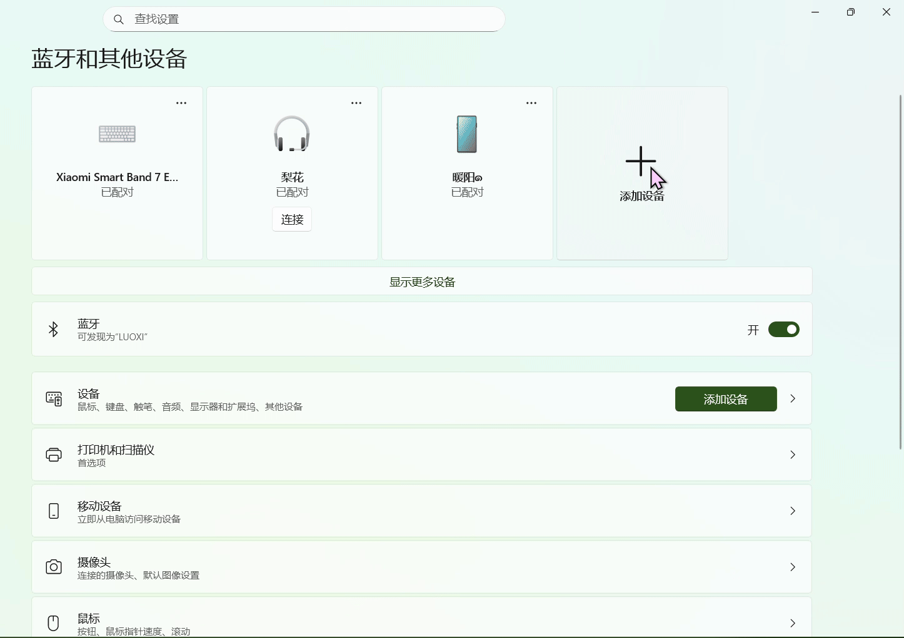
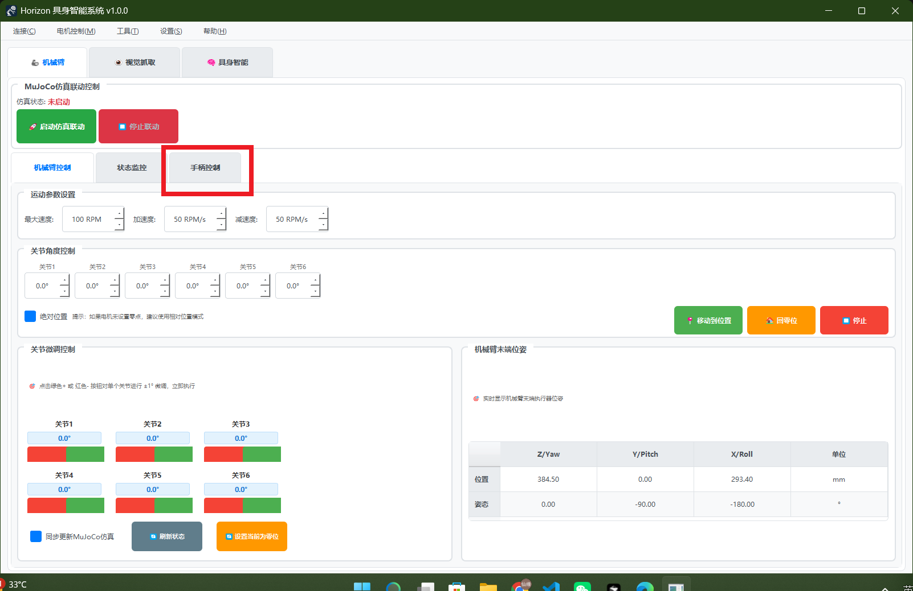
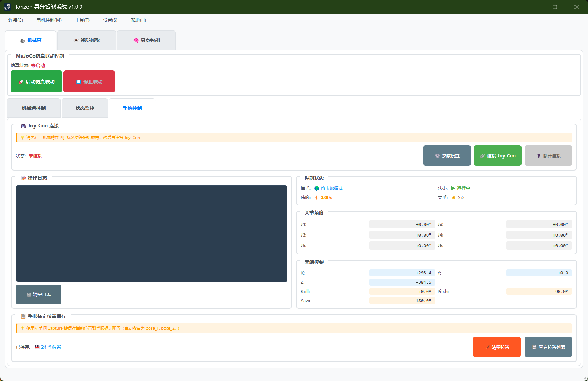

Joy-Con 手柄控制指南¶
使用 Nintendo Switch Joy-Con 手柄直观控制 Horizon Arm 机械臂
注：使用手柄控制前请确保已完成机械臂连接和基础校准。
1. 系统简介¶
核心特性¶
双模式控制 - 笛卡尔模式：直观的空间位置控制 - 关节模式：精确的关节角度控制 - 一键切换，灵活操作
实时响应 - 50Hz高频控制更新 - 平滑的运动响应 - 即时的按键反馈
安全保护 - 紧急停止功能 - 速度动态调节 - 微调模式精确定位
2. 硬件准备¶
设备要求¶
必需设备 - Nintendo Switch 左 Joy-Con - Nintendo Switch 右 Joy-Con - 蓝牙适配器（电脑内置或外置）
系统要求 - Windows 10/11 蓝牙支持 - 已安装 Horizon_Arm 控制软件 - 机械臂已正确连接
手柄配对¶
配对步骤
1. 进入配对模式
- 按住 Joy-Con 侧面的小圆按钮（同步按钮）
- 指示灯开始快速闪烁
2. 添加蓝牙设备
- Windows 设置 → 蓝牙和其他设备
- 点击"添加蓝牙或其他设备"
- 选择"蓝牙"
3. 连接手柄
- 等待识别到 "Joy-Con (L)" 或 "Joy-Con (R)"
- 点击配对
- 左右手柄分别配对
4. 验证连接
- 配对成功后指示灯常亮
- 在设备列表中显示"已连接"

蓝牙配对连接手柄演示
提示：两个手柄需要分别配对，确保都显示"已连接"状态
3. 软件配置¶
启动手柄控制¶
进入手柄控制界面
- 打开 Horizon_Arm 主程序
- 确保机械臂已连接（菜单：连接 → 连接电机）
- 进入"机械臂控制"标签页
- 找到"手柄控制"区域

手柄控制位置
连接手柄
- 点击"连接 Joy-Con"按钮
- 系统自动搜索并连接左右手柄
- 连接成功后显示"已连接"状态
- 手柄指示灯亮起表示已就绪

软件中连接手柄

手柄控制界面
初始化设置
- 系统默认启动在笛卡尔模式
- 初始速度为默认速度
- 微调模式默认关闭
4. 控制模式详解¶
笛卡尔模式（Cartesian Mode）¶
在笛卡尔模式下，手柄直接控制机械臂末端在空间中的位置和姿态，操作更加直观。
【左 Joy-Con】- 位置控制¶
| 输入 | 功能 | 说明 |
|---|---|---|
| 摇杆横向 (←→) | X轴移动 | 控制末端左右移动 |
| 摇杆纵向 (↑↓) | Y轴移动 | 控制末端前后移动 |
| L 按键 | Z轴向上 | 末端向上移动 |
| ZL 按键 | Z轴向下 | 末端向下移动 |
| 方向键↑ | 增加速度 | 提高移动速度 |
| 方向键↓ | 降低速度 | 降低移动速度 |
| - 按键 | 降低速度 | 快速减速 |
| 摇杆按下 | 微调模式切换 | 切换精细/普通控制 |
【右 Joy-Con】- 姿态控制¶
| 输入 | 功能 | 说明 |
|---|---|---|
| 摇杆横向 (←→) | Yaw角 | 绕Z轴旋转（偏航） |
| 摇杆纵向 (↑↓) | Pitch角 | 绕Y轴旋转（俯仰） |
| R 按键 | Roll 顺时针 | 绕X轴顺时针旋转 |
| ZR 按键 | Roll 逆时针 | 绕X轴逆时针旋转 |
| A 按键 | 关闭夹爪 ✊ | 夹爪闭合 |
| B 按键 | 打开夹爪 ✋ | 夹爪张开 |
| X 按键 | 切换模式 ⭐ | 切换笛卡尔/关节模式 |
| Y 按键 | 回到原点 🏠 | 机械臂归零 |
| + 按键 | 记录位置 💾 | 记录当前位置 |
| HOME 按键 | 紧急停止 🛑 | 立即停止所有运动 |
操作技巧¶
平移控制 - 左摇杆控制水平面（XY平面）移动 - L/ZL按键控制垂直方向（Z轴） - 推动摇杆幅度越大，移动速度越快
旋转控制 - 右摇杆控制Yaw（水平旋转）和Pitch（俯仰） - R/ZR按键控制Roll（翻滚旋转） - 旋转角度与摇杆偏移量成正比
应用场景 - 适合抓取、放置等空间定位任务 - 直观的空间移动，易于上手 - 适合视觉引导的操作
关节模式（Joint Mode）¶
在关节模式下，直接控制机械臂各个关节的角度，提供更精确的关节级控制。
【左 Joy-Con】- 关节1-3¶
| 输入 | 功能 | 说明 |
|---|---|---|
| 摇杆横向 (←→) | 关节1 | 基座旋转 |
| 摇杆纵向 (↑↓) | 关节2 | 大臂俯仰 |
| L 按键 | 关节3 负向 | 小臂向上 |
| ZL 按键 | 关节3 正向 | 小臂向下 |
| 方向键↑ | 增加速度 | 提高旋转速度 |
| 方向键↓ | 降低速度 | 降低旋转速度 |
| - 按键 | 降低速度 | 快速减速 |
| 摇杆按下 | 微调模式切换 | 切换精细/普通控制 |
【右 Joy-Con】- 关节4-6¶
| 输入 | 功能 | 说明 |
|---|---|---|
| 摇杆横向 (←→) | 关节4 | 腕部旋转 |
| 摇杆纵向 (↑↓) | 关节5 | 腕部俯仰 |
| R 按键 | 关节6 正向 | 末端顺时针 |
| ZR 按键 | 关节6 负向 | 末端逆时针 |
| A 按键 | 关闭夹爪 ✊ | 夹爪闭合 |
| B 按键 | 打开夹爪 ✋ | 夹爪张开 |
| X 按键 | 切换模式 ⭐ | 切换关节/笛卡尔模式 |
| Y 按键 | 回到原点 🏠 | 机械臂归零 |
| + 按键 | 记录位置 💾 | 记录当前位置 |
| HOME 按键 | 紧急停止 🛑 | 立即停止所有运动 |
操作技巧¶
关节映射 - 摇杆控制：关节1、2、4、5 - 按键控制：关节3、6 - 每个关节独立控制，互不干扰
精确定位 - 使用微调模式进行精细调整 - 适合需要特定关节角度的场景 - 可避开奇异点和关节限位
应用场景 - 适合示教编程和轨迹录制 - 需要精确关节角度控制的场景 - 避开奇异构型的操作
5. 功能按键说明¶
模式切换（X 按键）¶
切换方式 - 按下右手柄 X 按键 - 系统立即切换控制模式 - 界面显示当前模式
切换效果 - 笛卡尔模式 ⇄ 关节模式 - 无缝切换，保持当前位置 - 控制映射立即生效
使用建议 - 远距离移动使用笛卡尔模式 - 精确调整使用关节模式 - 根据任务需求灵活切换
夹爪控制（A/B 按键）¶
夹爪操作 - A 按键：闭合夹爪（抓取） - B 按键：张开夹爪（释放）
使用说明 - 夹爪控制在两种模式下都可用 - 动作执行需等待完成（约1秒） - 确保物体在夹爪范围内
注意事项 - 夹爪需提前连接（工具 → 夹爪连接） - 检查夹爪连接状态 - 避免空载过度闭合
归零功能（Y 按键）¶
归零操作 - 按下右手柄 Y 按键 - 机械臂返回预设零位
安全提示 - 确保运动路径无障碍物 - 归零过程中可用 HOME 键紧急停止 - 归零速度为系统默认安全速度
应用场景 - 任务开始前的初始化 - 完成任务后的复位 - 标准位置的快速返回
位置记录（+ 按键）¶
记录功能 - 按下右手柄 + 按键 - 记录当前机械臂位置和姿态
记录内容 - 6个关节的当前角度 - 末端位置（X, Y, Z） - 末端姿态（Yaw, Pitch, Roll）
使用场景 - 示教编程点位记录 - 重要位置标记 - 轨迹点采集
紧急停止（HOME 按键）¶
停止功能 - 按下右手柄 HOME 按键 - 立即停止所有电机运动
触发效果 - 所有关节立即停止 - 进入紧急停止状态 - 需要重新使能才能继续
恢复操作 - 检查停止原因 - 排除安全隐患 - 重新使能电机
重要提示 - 遇到异常立即按 HOME 键 - 这是最重要的安全功能 - 定期测试确保功能正常
6. 速度控制¶
速度调节¶
调节方式
| 操作 | 功能 | 说明 |
|---|---|---|
| 方向键↑ | 增加速度 | 速度 +20% |
| 方向键↓ | 降低速度 | 速度 -20% |
| - 按键 | 快速减速 | 速度 -20% |
速度范围 - 最低速度：20%（0.2倍速） - 默认速度：100%（1.0倍速） - 最高速度：200%（2.0倍速）
调节建议 - 初次使用建议降低速度 - 熟练后可适当提高速度 - 精细操作时使用低速
微调模式¶
激活方式 - 按下左或右摇杆（L3/R3） - 切换微调模式开关
微调效果 - 笛卡尔模式：移动步长减半 - 关节模式：角度步长减半 - 适合精确定位
使用技巧 - 粗调位置后开启微调 - 最终对准时使用微调 - 微调模式下可正常调速
7. 状态指示¶
手柄指示灯¶
连接状态 - 快速闪烁：配对模式 - 常亮：已连接就绪 - 熄灭：未连接或电量耗尽
电量提示 - 低电量时需要充电 - 建议使用充电握把 - 保持良好电量确保稳定性
软件状态显示¶
实时信息 - 当前控制模式 - 当前速度倍率 - 微调模式状态 - 手柄连接状态
位置信息 - 6个关节角度 - 末端位置坐标 - 末端姿态角度
8. 使用流程¶
标准操作流程¶
准备阶段
- 确保机械臂已连接并使能
- 配对并连接左右 Joy-Con
- 启动手柄控制功能
- 检查初始状态
操作阶段
- 选择合适的控制模式
- 调整到适当的速度
- 使用手柄控制机械臂
- 根据需要切换模式
结束阶段
- 将机械臂归零或移到安全位置
- 断开手柄连接
- 断开机械臂连接
典型任务示例¶
抓取任务流程
1. 接近目标
- 切换到笛卡尔模式
- 使用左摇杆移动到目标上方
- L/ZL调整高度
2. 调整姿态
- 使用右摇杆调整 Yaw 和 Pitch
- R/ZR 调整 Roll 角度
- 确保夹爪对准目标
3. 精确定位
- 开启微调模式
- 降低速度到50%
- 精确对准抓取点
4. 执行抓取
- 按 B 键打开夹爪
- 下降到抓取高度
- 按 A 键闭合夹爪
5. 移动物体
- 提升到安全高度
- 移动到目标位置
- 按 B 键释放物体
6. 归零复位
- 按 Y 键返回原点
- 准备下一次操作
9. 安全注意事项¶
操作安全¶
使用前检查 - 确认工作空间无障碍物 - 检查机械臂运动范围 - 确保紧急停止功能正常
操作中注意 - 首次使用低速操作 - 随时准备按 HOME 键停止 - 注意机械臂运动范围限制
异常处理 - 发现异常立即停止 - 检查机械臂状态 - 排除故障后再继续
设备保护¶
手柄保护 - 避免摔落和碰撞 - 及时充电保持电量 - 妥善保管避免丢失
机械臂保护 - 避免超速运动 - 不要强制推动机械臂 - 定期检查连接状态
10. 常见问题¶
手柄连接问题¶
Q: 手柄无法配对？
A: 检查以下项目： - 确保手柄已充电 - 蓝牙适配器正常工作 - 删除旧配对重新配对 - 重启电脑和手柄
Q: 连接后无响应？
A: 解决方法： - 重新连接手柄 - 检查手柄电量 - 重启控制软件 - 检查蓝牙连接状态
控制问题¶
Q: 控制方向相反？
A: 可能原因： - 电机方向参数设置错误 - 到"电机参数设置"调整方向 - 参考用户指南中的方向标准
Q: 运动不流畅？
A: 改善方法： - 降低运动速度 - 关闭微调模式 - 检查机械臂机械状态 - 确保无障碍物干涉
Q: 夹爪不工作？
A: 检查项目： - 夹爪是否已连接 - 串口是否选择正确 - 夹爪角度参数是否合理 - 重新连接夹爪控制器
性能问题¶
Q: 响应延迟？
A: 优化方法： - 确保蓝牙连接稳定 - 减少电脑后台程序 - 更换蓝牙适配器 - 靠近蓝牙接收器
Q: 手柄频繁断开？
A: 解决方案： - 检查手柄电量 - 更换蓝牙适配器 - 减少无线干扰 - 重新配对手柄
11. 高级技巧¶
组合操作¶
多轴同时控制 - 左摇杆 + L/ZL：三轴同时平移 - 右摇杆 + R/ZR：三轴同时旋转 - 灵活运用提高效率
快速调整 - 笛卡尔模式快速接近 - 切换到关节模式微调 - 充分利用两种模式优势
操作技巧¶
提高效率 - 记忆常用位置（+ 键） - 使用归零功能快速复位 - 熟练掌握模式切换时机
提高精度 - 使用微调模式 - 降低速度倍率 - 关节模式精确定位
12. 参数配置¶
默认参数¶
笛卡尔模式参数 - 平移步长：1.0 mm - 旋转步长：1.0° - 摇杆死区：500（避免漂移）
关节模式参数 - 角度步长：1.0° - 摇杆死区：500
速度参数 - 最小速度倍率：0.2（20%） - 最大速度倍率：2.0（200%） - 速度调节步长：0.2（20%） - 微调速度倍率：0.5（50%）
运动参数 - 默认速度：100（度/秒或mm/秒） - 默认加速度：200
参数调整¶
修改配置文件
配置文件位置：config/all_parameter_config.json
关键参数：
{
"joycon_control": {
"cartesian_position_step": 1.0,
"cartesian_rotation_step": 1.0,
"joint_angle_step": 1.0,
"stick_deadzone": 500,
"min_speed_multiplier": 0.2,
"max_speed_multiplier": 2.0,
"speed_change_step": 0.2,
"fine_tune_multiplier": 0.5
}
}
调整建议 - 根据实际需求调整步长 - 摇杆死区防止漂移 - 速度范围根据安全需要设置
13. 与其他功能配合¶
仿真联动¶
MuJoCo 仿真 - 手柄控制可同步显示在仿真中 - 预演复杂动作更安全 - 验证轨迹可行性
使用建议 - 启动仿真联动功能 - 先在仿真中测试 - 确认无误后实际执行
示教编程¶
轨迹录制 - 使用手柄控制到关键点 - 按 + 键记录位置 - 生成示教程序
应用场景 - 复杂轨迹示教 - 快速编程 - 现场教学
视觉抓取¶
结合使用 - 视觉系统识别目标 - 手柄微调抓取位置 - 提高抓取成功率
操作流程 - 视觉定位粗略位置 - 手柄精确调整 - 完成抓取任务
14. 维护保养¶
手柄维护¶
日常保养 - 定期清洁手柄表面 - 避免极端温度环境 - 妥善存放防止损坏
电池保养 - 长期不用时充满电 - 避免完全放电 - 定期充放电维持电池性能
软件维护¶
定期检查 - 更新控制软件 - 检查配置文件 - 备份重要设置
故障预防 - 定期测试紧急停止 - 验证连接稳定性 - 记录异常情况
15. 附录¶
快捷操作速查表¶
| 功能 | 左 Joy-Con | 右 Joy-Con |
|---|---|---|
| 主控制 | 摇杆 | 摇杆 |
| 辅助控制 | L / ZL | R / ZR |
| 速度↑ | 方向键↑ | - |
| 速度↓ | 方向键↓ / - | - |
| 微调 | 摇杆按下 | - |
| 夹爪开 | - | B |
| 夹爪关 | - | A |
| 切换模式 | - | X |
| 归零 | - | Y |
| 记录位置 | - | + |
| 紧急停止 | - | HOME |
技术支持¶
遇到问题？ - 查阅故障排除文档 - 查看用户指南完整说明 - 联系技术支持团队
更多资源 - 完整用户手册 - 视频教程 - 在线技术支持
Joy-Con 手柄控制 | 让机械臂控制更直观
© 2025 Horizon Arm • 智能、灵活、易用